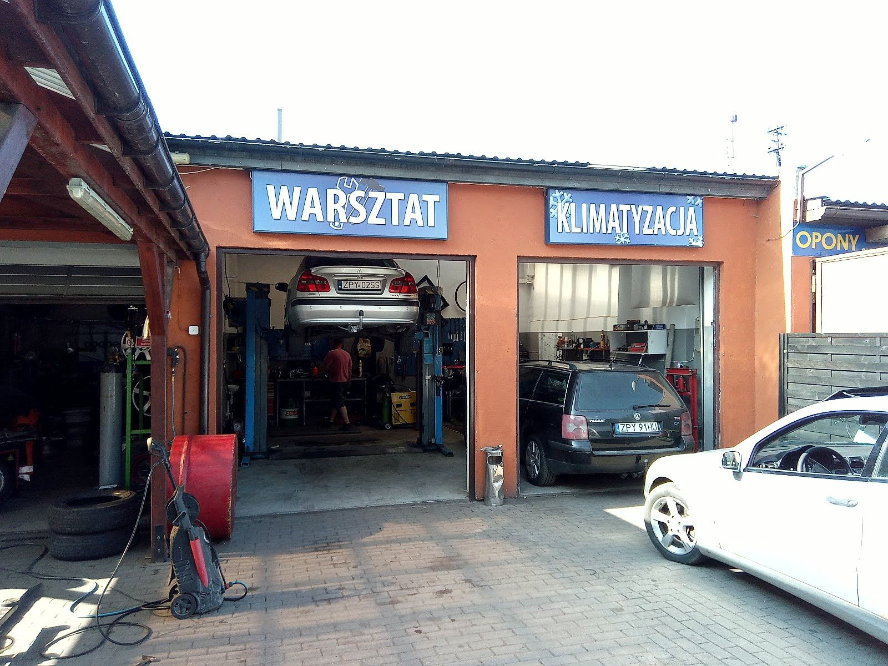
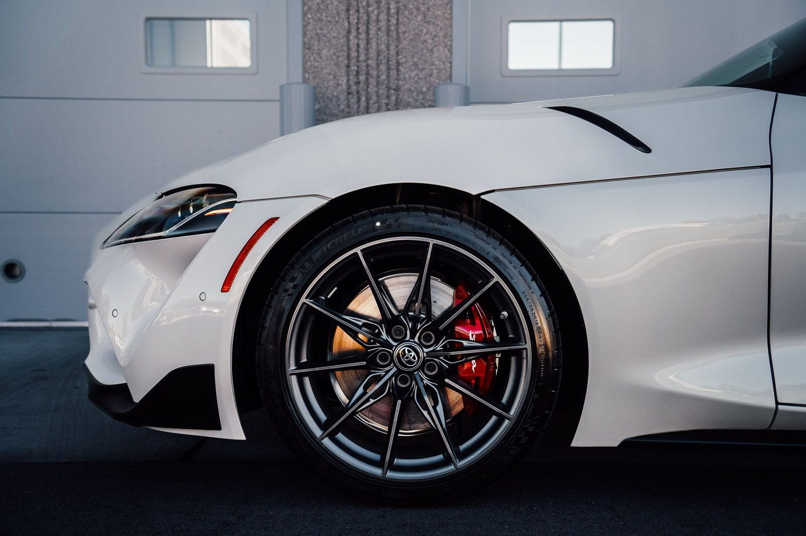
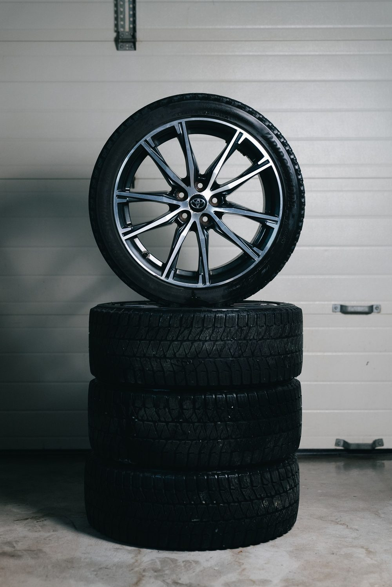
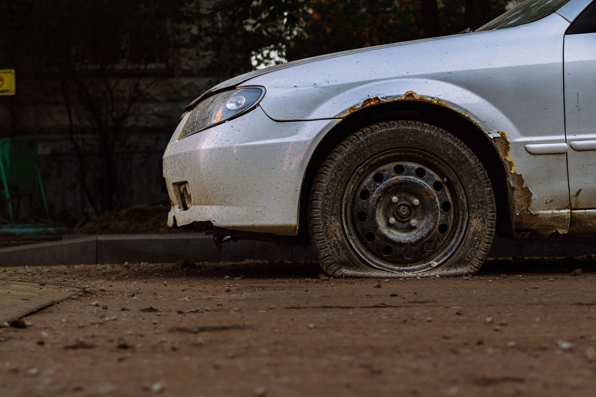
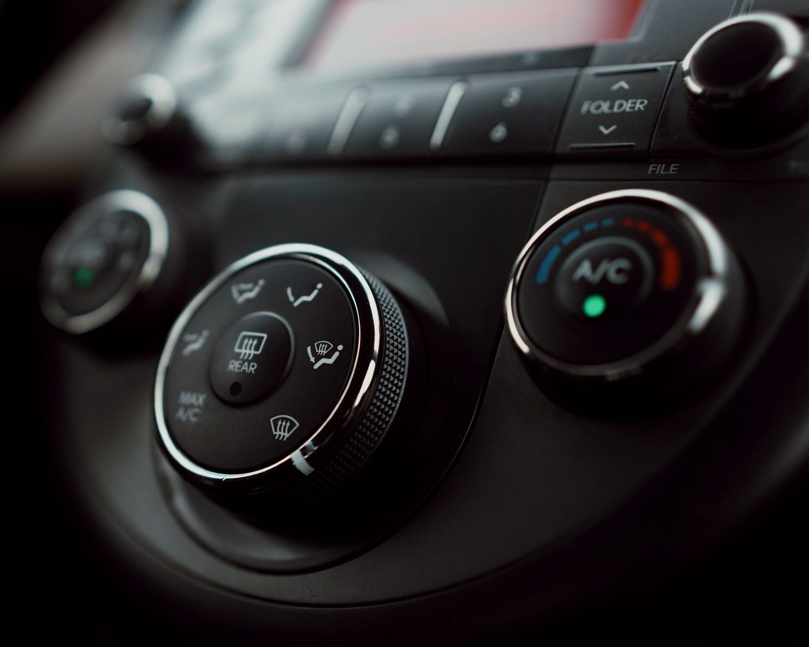
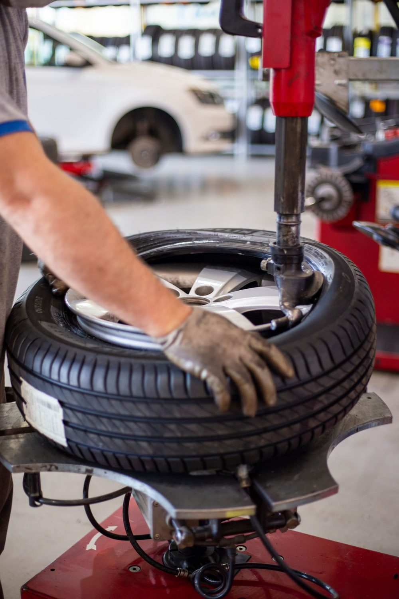
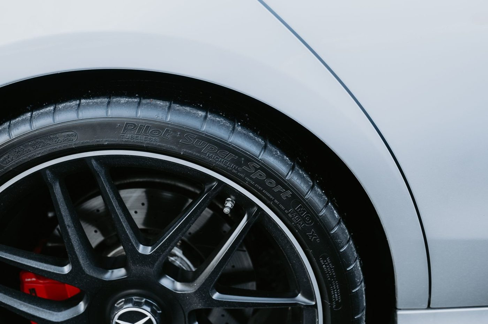
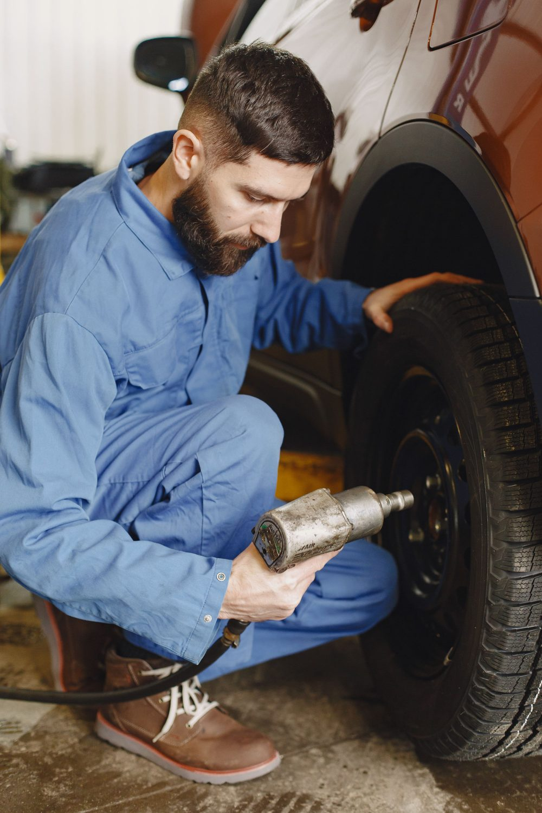

WulmarPyrzyce
WulmarPyrzyce
Prostowanie felg i klimatyzacja w Pyrzycach
Prostujemy wygięte felgi, serwisujemy klimatyzację, zmieniamy opony i naprawiamy auta. Warsztat przy Jana Pawła II, blisko ze Stargardu, Lipian i Myśliborza.
- 4,5 ocena w Google
- 43 opinie kierowców
- 6 dni w tygodniu otwarte
- 74-200 warsztat w Pyrzycach
Felgi, klimatyzacja i opony pod jednym dachem.
Wulmar to warsztat przy ulicy Jana Pawła II 4 w Pyrzycach. Pod jednym dachem jest mechanika, osobne stanowisko do klimatyzacji i wulkanizacja.
Najczęściej przyjeżdżają do nas kierowcy z dwiema sprawami: felgą wygiętą na dziurze albo krawężniku i klimatyzacją, która przestała chłodzić. Felgę po prostowaniu od razu sprawdzamy na wyważarce, a przy klimatyzacji zaczynamy od sprawdzenia szczelności.

Co mówią kierowcy.
Nigdy się na nich nie zawiodłem.
Daj znać przed przyjazdem, a powiemy, kiedy możemy przyjąć auto. Bez czekania na miejscu.
„Bardzo miła i fachowa obsługa. Mechanicy, którzy są jednocześnie właścicielami zakładu mechanicznego i wulkanizacji, mają dodatkową zaletę: ogromną wiedzę odnośnie napraw samochodowych.”
„(...) bezproblemowo i fachowo zajmują się mechaniką i klimatyzacją mojego Renault Megane III.”
Po czym poznać, że czas na wizytę.
Dla kogo jest każda usługa, jakie objawy dają znać i ile trwa naprawa. Zdjęcia poglądowe.



Felgi, klimatyzacja i opony z bliska
Tym zajmujemy się na co dzień: od wygiętego rantu po nawiewy, z których znów leci chłód. Zdjęcia poglądowe.







Prostować felgę czy kupić nową?
Felga po dziurze albo krawężniku zwykle nie musi iść na złom. Prostowanie wychodzi zwykle wyraźnie taniej niż nowa felga aluminiowa. Cenę podajemy po obejrzeniu felgi, zanim zaczniemy, a gdy uszkodzenie jest za duże, mówimy to wprost.
Zapytaj o cenęNowa felga · ten sam problem
Zwykle wyraźnie drożej niż prostowanie.
Prostowanie · tak robimy my
Wszystko, z czym przyjeżdżają kierowcy.
Felgi, opony, klimatyzacja i bieżąca mechanika. Opisz przez telefon, co się dzieje z autem, a powiemy, kiedy je przyjąć.

Felgi i opony
→Prostowanie felg po dziurach i krawężnikach, wyważanie kół i sezonowa wymiana opon.

Nie wiesz, co się dzieje z autem? Opisz objawy pod numerem +48 504 707 222, a doradzimy, od czego zacząć.
Dlaczego kierowcy wybierają Wulmar.
Koło sprawdzone
Po prostowaniu felgi od razu sprawdzamy koło na wyważarce, zanim oddamy auto.
Cena przed naprawą
Kwotę znasz, zanim zaczniemy pracę, a nie dopiero przy odbiorze.
Jedno miejsce
Mechanika, klimatyzacja i wulkanizacja pod jednym dachem w Pyrzycach.
4,5 w Google
43 opinie kierowców, którzy piszą o miłej i fachowej obsłudze.

Warsztat w Pyrzycach, blisko z całej okolicy
Pyrzyce i gmina
+48 504 707 222Pyrzyce · Lipiany · Kozielice · Bielice · Przelewice · Warnice
Jak dojechać →Stargard, Myślibórz, Gryfino
+48 504 707 222Stargard · Myślibórz · Gryfino · Banie · Dolice · Szczecin
Zapytaj o termin przed wyjazdem →Pytania, które słyszymy najczęściej
Krótko i konkretnie: o felgach, klimatyzacji, cenie i dojeździe.
/01Czy każdą felgę da się wyprostować?
Większość wygięć po dziurze czy krawężniku tak. Czasem uszkodzenie jest za duże i wtedy mówimy to wprost, zanim zaczniemy. Podjedź autem albo przywieź samą felgę, ocenimy na miejscu.
/02Ile trwa prostowanie felgi?
Zwykle to kwestia godzin, nie dni. Dokładny czas podamy po obejrzeniu felgi, bo zależy od tego, jak mocno jest wygięta i ile kół trzeba poprawić.
/03Jak często serwisować klimatyzację?
Najlepiej raz w roku, przed latem. Czynnika ubywa nawet ze sprawnego układu, a w nawiewach zbierają się grzyby i bakterie, które czuć jako stęchły zapach.
/04Ile to kosztuje?
Cenę podajemy, zanim zaczniemy pracę: po obejrzeniu felgi albo sprawdzeniu układu klimatyzacji. Kwotę znasz przed naprawą, nie przy odbiorze.
/05Jadę spoza Pyrzyc. Jak się umówić?
Zadzwoń przed wyjazdem: +48 504 707 222. Powiemy, kiedy możemy przyjąć auto, żebyś nie czekał na miejscu. Z samą felgą też możesz przyjechać.
/06Gdzie jest warsztat i kiedy jest czynny?
Jana Pawła II 4 w Pyrzycach. Od poniedziałku do piątku 9:00-17:00, w sobotę 9:00-14:00, w niedzielę nieczynne.
Felga drży albo klima nie chłodzi?
Zadzwoń i opisz, co się dzieje z autem. Powiemy, kiedy możemy je przyjąć i ile to potrwa.